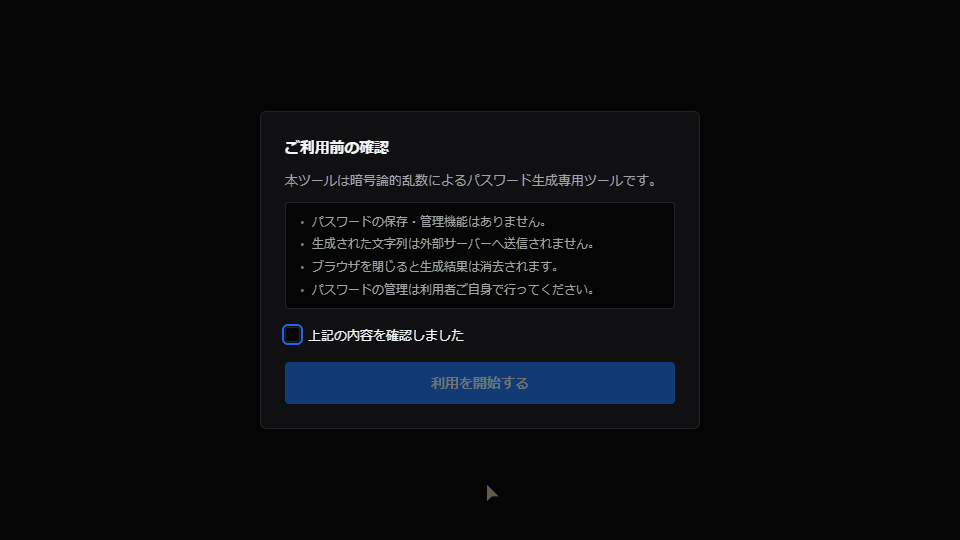

パスワード生成ツール
保存しない、ブラウザ完結のパスワード生成ツール

ツールを利用する / コードを見る
こんなときに
Web サービスの登録やパスワード変更のたびに、文字列を自分で考える手間をなくしたいときに使います。パスワードマネージャーに保存せず、その場で文字列を生成してコピーだけを行いたい場面に向いています。
できること
- ブラウザの暗号論的乱数（Web Crypto API
crypto.getRandomValues）を使い、4〜64文字のパスワードを生成できます。 - 「英大文字」「英小文字」「数字」「記号」から使う文字種を選べ、選んだ各文字種から最低1文字が入ります。
- 見分けにくい文字（
0 O 1 l I）を除外して生成できます。 - 文字数と選んだ文字種の数から、5段階の強度目安（「非常に弱い」〜「非常に強い」）を確認できます。
- 「コピー」ボタンでクリップボードへコピーでき、自動コピーできない環境では手動コピーの案内が出ます。
操作デモ

向かないこと・注意
- パスワードの保存・履歴・管理機能はありません。ブラウザのタブを閉じると生成結果は消去されます。
- 強度表示はエントロピー計算による目安であり、安全性を保証するものではありません。
- 動作確認は Chromium 系ブラウザで行っています（Firefox・Safari 実機での動作は未確認です）。クリップボードへの自動コピーには HTTPS または
localhost環境が必要です。 - 外部サーバーへのパスワード送信やデータ収集は行いません。本ツールは現状有姿（無保証）で提供されます。
なぜ作ったか
パスワードを毎回自分で考える作業は手間がかかります。一方で、生成した文字列をツール側に預けず、管理は自分で行いたい場合もあります。保存や送信の機能を省き、ブラウザ内でパスワードの生成とコピーだけに絞ったツールとして作りました。
開発支援（サポート）
Zero Dev は個人でツールの設計・開発・運営を行っています。ツールが役に立った際のご支援や、活動を応援していただける方は、以下のリンクよりサポートいただけますと幸いです。